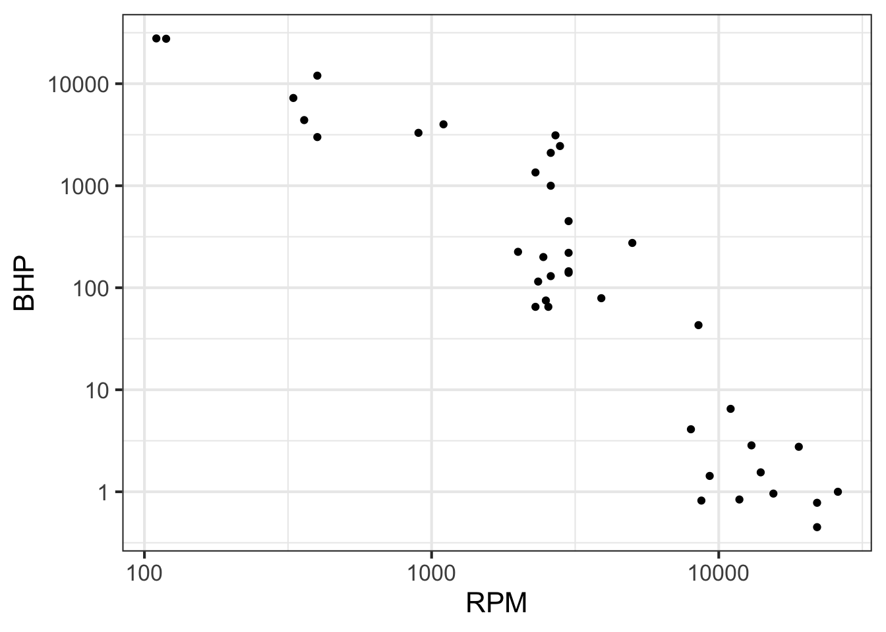
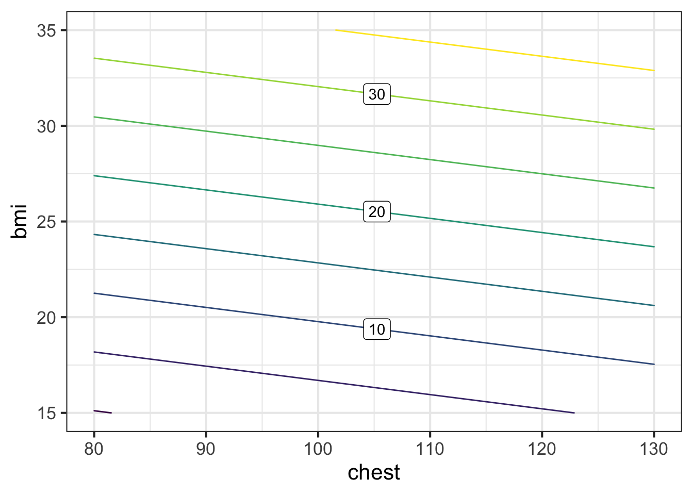
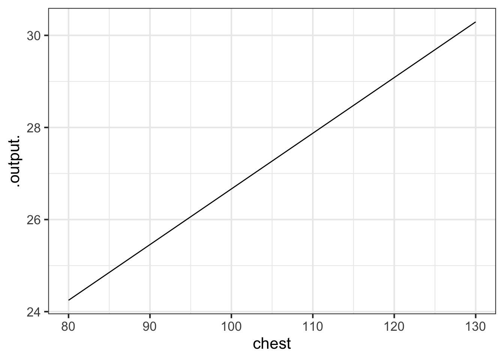

Chapter 8 Block 5 Projects and review
8.1 Internal combustion engines
The data frame Engines records the characteristics of 39 different internal combustion engines ranging in weight from 2 ounces to 100,000 pounds and for applications ranging from model airplanes to massive ships.
In this project, you are going to uncover some basic physical power-law principles about internal combustion engines from the Engines data.
As generally the case in modeling projects, it’s important to know something about the systems you are modeling. You might want to follow these links to learn the basic mechanics and functionality of internal combustion engines.
- Two-stroke engine cycle animation
- Four-stroke engine cycle animation
- Engine displacement
Make sure you are comfortable with at least the following aspects of internal combustion engines:
- Power is generated by burning a fuel (such as gasoline) in one or more cavities called “cylinders.”
- As the fuel is burned, the increase in pressure due to heating inside the cylinder causes a “piston” to be pushed out of the engine.
- The straight-line motion of the piston is converted to rotary motion. The rotary motion conveys the power the engine delivers. It also causes the piston to move back into the cylinder compressing the residual gas in the cylinder. What happens next depends on whether the engine is designed as a two-stroke or four-stroke, but in either case, the piston/cylinder combination eventually reaches a state of compressed air and fuel, ready to be burned for the next push of the piston.
- Each two- or four-stroke cycle converts chemical energy into the kinetic energy of a moving piston. Recall the distinction between “energy” and “power.” Power is a rate: the amount of energy per unit time.
- The mechanical power generated by an engine depends on many factors, for instance the amount of fuel burned each cycle, the number of cylinders, the time period of each cycle.
- Engineers make choices about the design of an engineering with the goals of 1) generating the mechanical power required, 2) efficiency in fuel use, 3) adequate strength to resist the forces generated in the engine cycle such as the peak pressure in a cylinder, 4) durability, and so on. Engines designed for different purposes are not generally just a scaled up version of a standard engine; the proportions within the engine differ.
To give an example, consider the cycle duration of each engine. This is given in RPM, short for “revolutions per minute” which you can convert to the duration of each revolution. The graph below shows the mechanical power output (BHP – short for “brake horsepower”) versus engine RPM. You can see a general pattern that engines with very large BPH revolve slowly. For instance, the two largest-power engines (about 30,000 BHP, equivalent to 22 megawatts) rotate at about 120 revolutions per minute, corresponding to an up-down cycle for a piston of one-half second. The smallest engines rotate roughly 100 times faster. (This high rate accounts for the high-pitched whine associated with tiny engines as compared to the low-pitched rumble of massive engines.)
gf_point(BHP ~ RPM, data = Engines) %>%
gf_refine(scale_x_log10(), scale_y_log10())
Suppose the engineer starts her design with a proposed RPM for the engine to deliver the power needed. Knowing RPM and power, the engineer can determine how much fuel needs to be burned in each cycle. Knowing the thermodynamics of fuel burn, the engineer can choose an appropriate configuration of the number of cylinders, the stroke volume of each cylinder, and the diameter (“bore”) of each cylinder. These, in turn, determine the force on the piston and cylinder and hence the material and mass of the engine. For model-airplane applications, the engineer will prioritize the power-to-mass ratio, perhaps sacrificing longevity. For ship applications, the power-to-mass ratio is not so important (ships are good at carrying very heavy things), but longevity is essential (replacing an engine weighing 50 tons from the deepest recesses of the ship is prohibitively expensive).
Consequently, all of these factors–mass, RPM, bore, stroke, etc.–are related to one another in perhaps intricate and unexpected ways. Your task is to discover some of these relationships from the data and, as well as you can, describe and explain them.
Some tools and concepts at your disposal:
- Physical relationships such as size, volume, and speed are often in the form of a power-law, so you will want to find power-law relationships.
- As you remember, a power-law relationship shows up as a straight line on log-log axes.
- You can find the slope of the straight-line relationship by fitting the logarithms of the variables to a linear model, e.g. \(\ln(y) \equiv a \ln(x) + b\). This corresponds to the power law relationship \(y = \alpha x^a\), where \(\alpha\) is a constant of proportionality reflecting the units involved.
- When more than one input variable is involved, power-law relationships look like \(y = \alpha x^a z^b w^c\). Taking logs of both sides produces a generalization of the straight-line model to higher dimensions, namely \(\ln(y) \equiv a \ln(x) + b \ln(z) + c \ln{w} + d\),
- You can use techniques of linear combinations to determine the values of \(a\), \(b\), and the other parameters. This requires software to solve the target problem which will be framed like this:
mod <- lm(log(BHP) ~ log(RPM) + log(ncylinder) + log(strokes), data = Engines)
coef(mod)## (Intercept) log(RPM) log(ncylinder) log(strokes)
## 13.431397 -1.259614 1.703957 -1.069366rsquared(mod)## [1] 0.9268817You might expect engine power to be proportional to the number of cylinders (which would give an exponent on ncylinder of 1.0), but evidently design constraints lead engineers to put proportionately more cylinders on big engines.
You can also see that the exponent on strokes is -1. If you know about engines, you’ll know that a two-stroke engine generates power every cycle, but a four-stroke engine generates power only every second cycle. Thus, at a given RPM and other design features, a four-stroke engine would generate half the power of a two-stroke engine. In other words, engine power is proportional to strokes\(^{-1}\).
You can also see that the \(R^2\) statistic indicates that the three variables RPM, ncylinder and strokes account for the vast majority of the engine-to-engine variation in BHP.
The above three paragraphs are the style of narrative explanation you should give for your explanation of the relationships you find. Do the best you can relating the power-law exponents to the mechanics of engine operation, although we hardly expect you to come up on your own with a relationship like BHP proportional to strokes\(^{-1}\). Give any reasonable speculation you want in describing the “why” of the relationships you find. We are looking for speculation that’s justified by the data. Since this isn’t a course about internal combustion engines, we’re looking more for creativity than matching the actual functioning of engines.
Essay 1: Explain briefly in your your own words why it’s appropriate to use logarithms and linear combinations in finding a power-law model such as \(\\gamma x^a z^b w^c\) which doesn’t involve addition.
Note on proportionality. A function such as \(f(x) \equiv 3 x\) has a property called “proportionality.” Proportionality means that doubling the input produces a doubled output. (Try it by applying the function to an input \(x = 1\), producing \(f(x)=3\). Then double \(x\) and see what happens to \(f(x)\).) Many people are surprised at first to realize that a function like \(g(x) = 3 x + 2\) is not proportional. (Try the plug-in experiment.) Yet the relationship \(h(x, y) = 3 x y\) is proportional in each of \(x\) and \(y\).
Try the plug-in experiment with \(h(x, y) = 3 x y\). Start by assigning numerical values to both \(x\) and \(y\) and calculating the resulting \(h(x, y)\).
Question O True or false: For function \(h(x, y)\) doubling input \(x\) leads to doubling \(h(x, y)\).
- True︎✘ Either you made an arithmetic mistake or, perhaps, you doubled both inputs and not just \(x\).
- FalseRight!
Question P True or false: For function \(h(x, y)\) doubling input \(y\) leads to doubling \(h(x, y)\).
True\(\heartsuit\ \) False︎✘
Question Q True or false: For function \(h(x, y)\) doubling input \(x\) and simultaneously doubling input \(y\) leads to doubling \(h(x, y)\).
True︎✘ False\(\heartsuit\ \)
8.1.1 Starting out
As a matter of geometry, engine displacement is proportional to the number of cylinders (ncylinder) times the stroke length (stroke not strokes) times the square of the cylinder diameter (bore). That is, in any given engine, displacement is \(\alpha\) ncylinder\(^1 \times\) stroke\(^{1} \times\) bore\(^2\). Determine whether the engine data is consistent with this. (Note: Expect only rough correspondence between a stated theory and the data. Remember that the engine design always involves choices. For instance, over the wide range of engines represented in the data, designers might have made choices like “long strokes” should be paired with smaller bores.)
What does the data say about the relationship between (total) engine displacement and the geometry of a cylinder? For geometrical reasons, we expect the relationship to be a power law: \[\text{displacement}(\text{ncylinder}, \text{stroke}, \text{bore}) = A\, \text{ncylinder}^a \text{stroke}^b \text{bore}^b\] The exponents can be found by fitting a linear model with the logarithms of the quantities.
mod <- lm(log(displacement) ~ log(ncylinder) + log(stroke) + log(bore),
data = Engines)
# get coefficients with coef(mod) and R-squared with rsquared(mod)Essay 2: Explain what about your model is consistent or not with the geometry theory of displacement. If you see other patterns in the coefficients, describe them and speculate why they might show up.
Essay 3: Explain why it’s appropriate for the tilde expression used in
lm()to involve so many calls to thelog()function. If the reason is obvious to you, don’t feel you need to chase down subtle answers; just say the obvious.
8.1.2 Another example
The force on a piston will be proportional to the surface area of the piston (related to bore) and the square of the RPM times the stroke length (all other things held constant). To keep engine parts from breaking from the force, they must be stoutly designed. One way to accomplish this is to increase the engine mass. This proposed relationship between mass, bore, RPM, and stroke is merely a theory. It might be that it applies only to particular parts in the engine and not to the entire engine mass.
Use a sandbox[SANDBOX](https://maa-statprep.shinyapps.io/CalcZ-Sandbox/) to determine whether the simple theory (the theory about the relationship between enginemass,bore,RPM, andstroke`) holds up in the data. In your essay, describe what about the model leads you to conclude that the theory holds or not.
Essay 4: Explain what about your model is or is not consistent or with the simple theory of mass/strength/RPM. If you see other interesting patterns in the coefficients, describe them and speculate why they might show up.
8.2 Cylinder shape
Consider the shape of a cylinder. As you know, the caps of a cylinder are circles; the volume of a cylinder is the area of the circular cap times the height of the cylinder. Of course, there are many different shapes of cylinders that have the same volume: small caps and tall height or large caps and short. One way to describe the shape of a cylinder of a given volume is by the ratio of the height to the diameter the circular cap. The height of each engine’s cylinder is given as its stroke length. The diameter of the circular cap is the bore. If all engines had the same shape cylinder, the ratio of stroke to bore would be constant. In reality, stroke/bore ratio varies by a factor of 3 from one engine to another.
It’s reasonable to expect that the engine designers made their choices of cylinder shape based on the use of the engines or other features of the engine design. Your job is to build a model of cylinder shape as a function of other variables describing the engine.
The sandbox below has a command that creates a variable c_ratio whose value is the stroke/bore ratio. (Don’t worry about understanding the command. You just have to know that it creates the new variable c_ratio by dividing stroke by bore.) When you build your model, put log(c_ratio) on the left side of the tilde expression and the logs of other engine variables on the right, just as you did in the previous two examples.
Engines <- Engines %>% mutate(c_shape = stroke / bore)Essay 5: What (if anything) accounts for the variation in cylinder shape?
8.3 Body fat
The original code shows a model I built with chest circumference and bmi as explanatory variables. In a bit, you’ll change this to build your own models. But before we go there, examine the output produced by my bodyfat ~ chest + bmi model in the Sandbox that follows these questions, perhaps comparing it to the earlier models. Then come back and answer these questions:
Question R Using R\(^2\) as a basis for judgment, does ~ chest + bmi as explanatory variables improve the model compared to ~ bmi?
checkimproves the model a lot︎✘ But the R\(^2\) for the~ bmimodel is practically the same as the R\(^2\) for the~ chest + bmimodel.
chestdoesn’t add much tobmiNice! Right. The R\(^2\) for the~ bmiand the~ chest + bmimodels are almost exactly the same.
chestmakes the model much worse.︎✘
Question S The slice plot produced by the code box that follows shows bodyfat as a function of chest circumference, holding bmi at 30. What’s the relationship between chest circumference and bodyfat shown by the slice plot?
bodyfatincreases strongly withchest.︎✘
bodyfatincreases, but weakly, withchest︎✘
- No relationship whatsoever︎✘
bodyfatdecreases, but weakly, withchestCorrect.
bodyfatdecreases strongly withchest.︎✘
mod <- lm(bodyfat ~ chest + bmi, data = Body_fat)
fun <- makeFun(mod)
contour_plot(
fun(chest = chest, bmi = bmi) ~ chest + bmi,
domain(chest = c(80, 130), bmi = c(15,35))) 
rsquared(mod)## [1] 0.5571777slice_plot(fun(bmi=30, chest = chest) ~ chest,
domain(chest = c(80, 130))) 
Use the technique implemented in the above Sandbox to find one of the circumferences that is strongly predictive of percent body fat when holding bmi constant. Remember that when you change chest to some other variable, you need to change it everywhere it appears in the code block. You also need to set the domain for your new variable appropriately. Here are the variable names in the Body_fat data frame. Most of these are circumferences around the named body area. The others, e.g. age, weight, height, bmi, are self-explanatory.
names(Body_fat)## [1] "bodyfat" "age" "weight" "height" "neck" "chest" "abdomen"
## [8] "hip" "thigh" "knee" "ankle" "biceps" "forearm" "wrist"
## [15] "bmi"Below these questions are a few extra fill-in-the-blanks sandboxes, so you can build several models and compare them.
Question X: Which variable (or variables) you examined did the best job of predicting percent body fat when added to
bmi?
Question XX: How did that variable (or variables) do if
bmiwere excluded from the model?
mod <- lm(bodyfat ~ __variable__ + bmi, data = Body_fat)
fun <- makeFun(mod)
contour_plot(
fun(__variable__ = __variable__, bmi = bmi) ~ __variable__ + bmi,
domain(__variable__ = c(80, 130), bmi = c(15,35)))
rsquared(mod)
slice_plot(fun(bmi=30, __variable__ = __variable__) ~ __variable__,
domain(__variable__ = __appropriate_domain__)) mod <- lm(bodyfat ~ __variable__ + bmi, data = Body_fat)
fun <- makeFun(mod)
contour_plot(
fun(__variable__ = __variable__, bmi = bmi) ~ __variable__ + bmi,
domain(__variable__ = c(80, 130), bmi = c(15,35)))
rsquared(mod)
slice_plot(fun(bmi=30, __variable__ = __variable__) ~ __variable__,
domain(__variable__ = __appropriate_domain__)) mod <- lm(bodyfat ~ __variable__ + bmi, data = Body_fat)
fun <- makeFun(mod)
contour_plot(
fun(__variable__ = __variable__, bmi = bmi) ~ __variable__ + bmi,
domain(__variable__ = c(80, 130), bmi = c(15,35)))
rsquared(mod)
slice_plot(fun(bmi=30, __variable__ = __variable__) ~ __variable__,
domain(__variable__ = __appropriate_domain__)) mod <- lm(bodyfat ~ __variable__ + bmi, data = Body_fat)
fun <- makeFun(mod)
contour_plot(
fun(__variable__ = __variable__, bmi = bmi) ~ __variable__ + bmi,
domain(__variable__ = c(80, 130), bmi = c(15,35)))
rsquared(mod)
slice_plot(fun(bmi=30, __variable__ = __variable__) ~ __variable__,
domain(__variable__ = __appropriate_domain__))